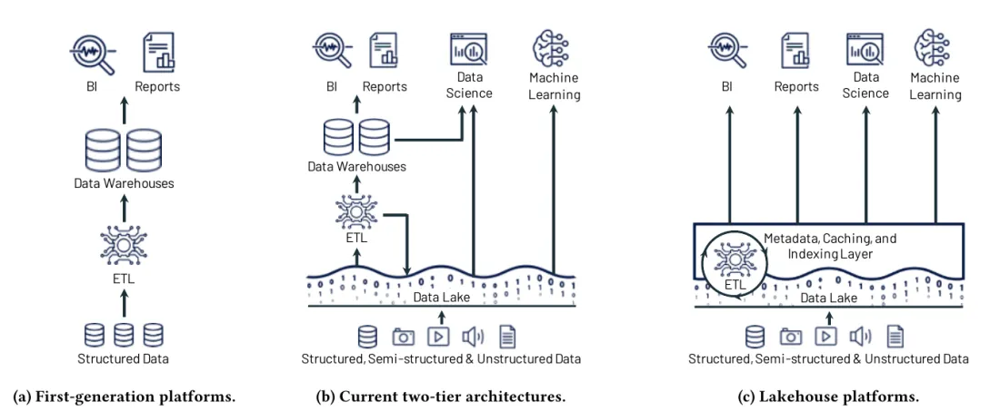

An analytic query is cheap when it touches few bytes and spends little CPU per value: store each column apart, encode it small, keep the min and max of every block so blocks that cannot match are skipped, and process values in batches. Parquet, DuckDB, ClickHouse, the cloud warehouses and the lakehouse formats are different ways of arranging data so those four tricks apply, and the order the rows were written in decides how well they work.
The real Parquet file of the parent page's 10 million chat messages, written by DuckDB 1.5.6: 82 row groups (columns of the drawing, 122,880 rows each), each holding one column chunk per column (bands, heights to scale from row group 0's footer: content is 4.79 of its 6.53 MB). Area is bytes. For SELECT count(*), sum(tokens) WHERE created_at on 2026-03-01, the reader first reads the 76,648-byte footer at the end of the file (the orange line, drawn wider than its bytes so it can be seen), compares each row group's min and max of created_at with the day, and reads two chunks of the one row group that can match: 1,197,073 bytes measured, 446 times less than the file derived. Reading the two columns in every row group would be 76 MB; reading rows would be all 534 MB.
You need: the root Topic: databases, Reading sections 1 to 5 (tables, SQL, why a disk read is slow, rows against columns in one picture). Pages, B-trees and LSM-trees are on Storage engines and indexes; the SQL used here (joins, GROUP BY, window functions) is SQL and data modelling; EXPLAIN on the row-store side is Query planning and performance.
| Idea | What it buys, measured here | Section |
|---|---|---|
| Store each column separately, in blocks of rows | Read 2 of 7 columns: 18 MB instead of 1.5 GB | 2 |
| Encode by type (dictionary, run-length, delta) then compress | Timestamps 80 MB to 0.34 MB; roles 105 MB to 17.5 KB when sorted | 2 |
| Keep min and max per block, skip blocks that cannot match | One day of 10M messages: 1.2 MB read of a 534 MB file | 3 |
| Process batches of values, not one row at a time | Sum of 10M numbers: 7.9 ms on one DuckDB thread, about 1.1 s in SQLite and in Postgres without parallel workers | 4 |
| Parquet: the open file that carries all of the above | Footer first, then only the needed byte ranges, even over HTTP | 5, 6 |
| DuckDB: a column engine inside your program | Five analytic queries 45 to 339 times faster than Postgres, at each engine's defaults on one laptop | 6 |
| ClickHouse: a column store server for fresh events | One chat's messages: 1 granule of 1,221 read | 7 |
| Cloud warehouses: storage apart from compute | Pay per byte scanned or per second of compute; pick by bill shape | 8 |
| Lakehouse table formats (Iceberg, Delta, Hudi) | Atomic commits, schema changes and time travel on Parquet files | 9 |
| Pipelines and ML: ELT, dbt, point-in-time joins | The naive join leaked a future plan into 96,929 training examples | 10, 11 |
Which system, when. Keep the app on Postgres, and start analytics there too, on a read replica with a few summary tables refreshed by a job: under a few million rows of events, that is enough. When analytic queries take seconds and hurt the app, copy the data out (nightly, or as a stream of changes) into Parquet files sorted by time and query them with DuckDB; one machine handles hundreds of gigabytes. When dashboards need sub-second answers over billions of fresh events, run ClickHouse fed by batched inserts. When many teams, many engines or tens of terabytes share the data, use a lakehouse (Iceberg plus a catalog) or a cloud warehouse, with dbt for transformations and budget alerts from day one. Each step adds a system to run and a copy to keep correct, so take the next one only when the current one measurably fails.
OLTP (online transaction processing) is what the app does: many small requests, each reading or writing a few whole rows (open chat 424242, save one message), each expected in milliseconds, with transactions keeping concurrent writers correct. OLAP (online analytical processing) is what analysts, dashboards, billing and ML pipelines do: few, large queries that read a few columns of millions or billions of rows and aggregate them, where seconds are fine and rows are rarely changed after they are written.
The chat product's analytics questions are the five queries measured below: tokens per model (the parent page's case 6), messages per day in March, tokens by country and plan (a join of messages, chats and users), the top 10 users by tokens in the last 30 days, and distinct active chats per model per month.
Same rows in each engine, every answer checked identical; median of warm runs on one laptop. DuckDB was 45 to 339 times faster than PostgreSQL at default parallelism, 28 to 148 times with one thread each measured.
Same rows in each engine (100,000 users, 1M chats, 10M messages, from the root's generator), every answer checked identical. PostgreSQL 16.2 with its two base indexes and 7 GB of shared buffers warmed so the tables sat in memory; SQLite 3.47.1 with a 2.5 GB page cache; DuckDB 1.5.6 in its own file. Default parallelism (Postgres 2 workers per query, DuckDB 10 threads), and one thread each. Median of 3 warm runs (SQLite 2), on a shared laptop (src/measure/engines.py, 2026-10-04).
Sections 2 to 4 explain where each factor comes from. None of this says Postgres or SQLite are slow databases: ask each to fetch one chat's messages by key and the ranking reverses, which is why the app stays on Postgres.
The problem. A table of 10 million messages is about 1.5 GB in Postgres. An analytics question usually needs two or three of its seven columns, and it needs every row of them. A layout that keeps each row's values together forces the reader through all seven columns to get two.
The idea. Cut the table into blocks of rows (a row group: in DuckDB's own storage and in the Parquet files it writes, 122,880 rows by default (DuckDB Parquet docs)). Inside each block, store each column on its own, one after another: a column chunk (the bands of the hero figure). A query that names model and tokens reads those two chunks from every block and never touches content: that is the root page's 87 times fewer bytes at 10 million rows (Query plans tab, case 6).
The second win comes free: one column's values are all the same type and usually look alike (two roles, four model names, timestamps three seconds apart), so they fit in far fewer bits. Two layers do it, and they are worth keeping apart. Encoding rewrites values into a smaller form the engine can still read directly, often without decoding everything first; it knows the type. Compression (a codec such as Snappy, LZ4 or Zstandard) then squeezes the encoded bytes as an opaque blob, the way a zip file does, and must be undone before the bytes are used.
role, real bytes from the 23,047-byte file of section 5): each distinct string once in a dictionary page, then a code per row, packed into as few bits as the largest code needs: user, assistant repeated is the byte aa (binary 10101010, read from the lowest bit up). Useless when nearly every value is distinct (an id): writers fall back to plain when the dictionary grows too big (pyarrow's default limit is 1 MB per column chunk, pyarrow docs).model, table sorted by model): long runs of one value become (value, repeat count) pairs, a handful per page. Nothing is gained when values alternate; Parquet mixes RLE runs and bit-packed runs in one stream, the RLE/bit-packing hybrid (Parquet encodings).id): the first value, then the differences minus each block's smallest difference, bit-packed (DELTA_BINARY_PACKED): ids that grow by exactly 1 need 0 bits each, 500 ids in 80 bytes, page header included. Differences of a random column are as big as the values.content): free text has no structure an encoding can use, so only the codec helps.Byte stream split targets numbers whose bytes are noisy at the bottom but similar at the top (floats, measurements): write all first bytes, then all second bytes, and so on, so the codec sees long similar streams. It saves nothing on its own; it only helps the codec that follows.
Codecs: Snappy and LZ4 are fast and modest; Zstandard (zstd) compresses harder for a little more CPU, with levels; gzip and Brotli are slower still. Parquet lists UNCOMPRESSED, SNAPPY, GZIP, LZO, BROTLI, LZ4 (framing deprecated), ZSTD and LZ4_RAW (parquet-format).
Every column of the 10 million messages, written on its own by pyarrow 25.0.1 with each encoding and each codec; the bar is the column chunk's size from the file's footer (src/measure/encodings.py, run 2026-10-04). Predict before you click role: will sorting the table shrink it by 2 times, 10 times or 70 times?
id and created_at: 80 MB plain, 0.22 and 0.34 MB with delta encoding (367 and 236 times smaller), before any codec. Consecutive ids differ by 1 and timestamps by 3 seconds, so every delta fits in a couple of bits. Dictionary is the wrong tool here: it gave up and stored 82.7 MB.role: 105 MB of plain strings; a dictionary of two words plus 1 bit per row is 1.29 MB (10 million bits is 1.25 MB). Roles alternate user, assistant, so runs never form. Sort the table by role and the same dictionary encoding gives 17.5 KB, about 73 times smaller: the bits become a handful of RLE runs.model: four values, so 2 bits each: 2.54 MB with a dictionary, and Snappy or zstd on top gain nothing, because bit-packed random codes look like noise to a codec.content: 835 MB plain, 389 MB with Snappy, 223 MB with zstd. Caveat: the generator's text is a repeated hexadecimal hash, which compresses unusually well; real chat text should be measured on your own data.What it costs. Encoded, compressed columns are cheap to scan and expensive to change: updating one message means decoding and rewriting whole chunks, which is why column stores append in bulk, mark deletions on the side, and merge later (sections 7 and 9). Rebuilding a whole row touches one chunk per column. And CPU is spent on every read to undo the codec; with fast disks and a heavy codec, scans can become CPU-bound.
The problem. Reading only two columns is good; reading only the part of those columns that can matter is better. "Messages on 1 March 2026" needs 28,800 of 10 million rows. A column store has no B-tree to find them (an index per column would cost as much to maintain as the data), so it needs a cheaper trick.
The idea: a zone map. When a block of rows is written, record the smallest and largest value of each column in it (its min/max statistics). At query time, compare the filter with each block's range: if 1 March lies outside [min, max], no row in the block can match, and the block is skipped without being read. Postgres has the same idea as the BRIN index; Parquet keeps the statistics per row group in its footer; Snowflake keeps them per micro-partition; ClickHouse per granule of 8,192 rows (section 7).
The real 534 MB file (82 row groups of 122,880 rows; each bar one row group, its height the compressed bytes of the two columns the query needs). Step through it. Bytes with pruning are computed from the footer and reproduce DuckDB's measured 1,197,073 bytes for the day query exactly, independently; for the chat query the footer gives 708,747 against 741,532 measured (DuckDB read slightly more than the two chunks; the extra was not broken down). Without statistics the reader needs 76 MB for the day.
The catch: skipping only works on sorted data. The file above was written in time order (message ids grow with time), so each row group covers about four consecutive days and a date filter lands in one or two of them. A chat's messages sit within about 20,000 consecutive rows (the generator interleaves chats active at the same time), so a chat filter also lands in one or two row groups, by luck of how the app writes. Shuffle the rows and every row group spans every date and every chat: nothing can be skipped. Predict what one chat costs in a shuffled file before choosing it below.
The same 10 million messages written four ways, 100 row groups of 100,352 rows, Snappy, bytes DuckDB really read measured. One chat costs 0.46 to 0.69 MB from a file sorted by time or by chat, and 34 to 86 MB from a shuffled one (any row-group size). The Parquet lab tab has all 36 files (sort order, row-group size, codec).
Reading fewer bytes is half the story. Once the bytes are in memory, the engine still has to add up 10 million numbers, and how it loops over them matters as much as the disk.
Row at a time. Classic engines, Postgres and SQLite included, execute a plan as a tree of operators that pass one row at a time: the aggregate asks the scan for the next row, the scan decodes one row from a page and hands it up, the aggregate adds one number. This is the iterator or Volcano model. Fine for OLTP; for 10 million rows the CPU spends most of its time on per-call overhead (function calls, type checks, branches) rather than on the additions.
A vector at a time. Vectorised execution passes a batch of values, a vector, between operators: in DuckDB 2,048 values of one column per call (DuckDB execution format). The per-call overhead is paid once per 2,048 values, and the inner loop is a tight loop over an array of one type, which the compiler turns into SIMD instructions and the CPU's caches and branch predictor love.
The idea comes from MonetDB/X100 (Boncz, Zukowski and Nes, CIDR 2005); DuckDB, ClickHouse, Snowflake, Databricks Photon and Velox all execute this way. The other modern route attacks the same overhead by compiling to machine code: Postgres's JIT compiles expressions, and engines such as HyPer compile whole queries.
Measured on one question, the sum of the 10 million tokens values, already in memory, one CPU thread unless marked (src/measure/vec_ooc.py, engines.py):
The two row-at-a-time engines take about a second; DuckDB on one thread takes 7.9 ms, about 136 times less, and numpy, a vectorised loop with no query engine around it, 2.4 ms. The Python loop sits in between because summing machine integers in a list is the simplest possible loop; a database's per-row work (decoding a tuple, checking visibility, evaluating an expression tree) is heavier. Parallel workers help both kinds of engine, but they multiply, they do not remove, the per-row cost.
The problem. SELECT sum(tokens) WHERE chat_id = 424242 needs tokens only for the 7 rows that match. Fetching and decoding the whole tokens column first and filtering afterwards ("early materialisation", building full rows up front) wastes most of that work.
The idea. Evaluate the filter on chat_id alone, keep a list of the positions that passed, and fetch other columns only for those positions, as late as possible (Abadi, Madden and Hachem, SIGMOD 2008). DuckDB does this per row group when reading Parquet, and it shows in bytes:
Top pair: one chat in a shuffled file (100 row groups): the footer says the chat_id and tokens chunks of all 100 row groups are needed, 64 MB; DuckDB read 50 MB, because it fetched tokens only from the row groups where the chat actually appeared. Bottom pair: the longest content among messages over 1,495 tokens (6,950 rows, in every row group) read 404 MB, more than reading content for all 10 million rows (390 MB), because every row group had a match and the text of a row group is one chunk measured.
Its limit. The gain is at the granularity of what can be skipped: in the second case late materialisation saved the decoding of most strings, not the bytes. Sorting so that matches cluster is again what turns it into fewer bytes.
Why a file format matters. Sections 2 to 4 describe what every column store does inside its own storage. Apache Parquet writes the same structure into an ordinary file that any engine can read: DuckDB, ClickHouse, Spark, pandas, Polars, BigQuery, Snowflake, and every lakehouse table format. It is the shared language of analytics data, so knowing its layout explains most performance surprises.
The layout (parquet-format README): the file starts with the 4 bytes PAR1 (hex 50 41 52 31), a "magic number" that identifies the format. Row groups follow, one after another; each holds one column chunk per column, and each chunk is a sequence of pages: optionally one dictionary page, then data pages. Every page starts with a small page header (its type, sizes, value count, encoding) and is the unit that is encoded and compressed. At the end comes the footer (the file metadata): the schema, then for every row group and every column chunk its byte offset, sizes, encodings, codec and statistics (min, max, null count), serialised with Apache Thrift's compact protocol. The last 8 bytes are the footer's length (4 bytes, little-endian) and PAR1 again.
The first 1,000 chat messages (six columns, content left out so the pages stay small), written by pyarrow 25.0.1 as two row groups of 500 rows, with no compression so the bytes stay readable, dictionary encoding for role and model, delta encoding for id and plain for the rest. Click any region, starting with the footer length at the very end. Every value was decoded from the file by a 49-line Thrift compact-protocol reader written for this page (src/measure/thrift_compact.py), and each column chunk's offsets and sizes were checked equal to pyarrow's own reading of the footer.
Why the footer is at the end. A writer streams row groups out without knowing in advance how big they will be, then writes the offsets once it knows them. A reader does the reverse: (1) read the last 8 bytes, the footer length and PAR1; (2) read and decode the footer; (3) compare the query's filter with each row group's statistics and skip what cannot match; (4) for each surviving column chunk the query needs, read its byte range, then page by page: the page header, then the body (decompress, then decode). That is why a query on object storage starts with one small request at the end of the file (section 6 shows the requests). The role and id pages of this file are the ones drawn in section 2's encoding figure.
The footer is Thrift compact protocol: each field is a one-byte header holding the gap to the previous field id and a type, then the value; integers are variable-length and zigzag-encoded. Field numbers and enum values from parquet.thrift; the hybrid RLE/bit-packing format from the encodings page.
DuckDB 1.5.6 writing the messages with its defaults (Snappy, row groups of 122,880 rows) produced a 534 MB file with 82 row groups and a 76,648-byte footer. Row group 0, as pyarrow reads the footer:
Two things to notice. DuckDB wrote id and created_at with PLAIN encoding (Snappy then halves id: 0.98 MB to 0.49 MB), whereas pyarrow with delta encoding would make them a few hundred kilobytes for the whole file (section 2): writers differ, and it shows in file size. And the created_at min and max of row group 0 are 2025-09-01 00:00:03 and 2025-09-05 06:24:00: about four days per row group, so a one-day query touches one or two of 82 row groups.
WRITE_BLOOM_FILTER true, target false-positive ratio 0.01, COPY docs).Row group size trades skipping against overhead. The spec suggests large row groups (512 MB to 1 GB) for sequential scans; DuckDB defaults to 122,880 rows. Tiny row groups (10,000 rows) skip finely but bloat the footer and slow every query; huge ones skip little. A few hundred thousand to a few million rows, or 100 MB to 1 GB, is the usual range; the Parquet lab tab measures all three sizes.
What it is. DuckDB is a column-oriented, vectorised SQL engine that by default runs inside your process, like SQLite: pip install duckdb, no server, no network hop, no users to manage (SIGMOD 2019 demo paper). A database is one file (or none, in memory); MIT licensed. Its most useful habit for analytics: it reads Parquet, CSV and JSON files directly, with no load step, and treats a glob of files as one table.
import duckdb
con = duckdb.connect() # in memory; or duckdb.connect('chat.duckdb')
con.sql("""
SELECT model, count(*) AS messages, sum(tokens) AS tokens
FROM 'exports/messages/*.parquet' -- every file in the folder, one table
WHERE created_at >= '2026-03-01'
GROUP BY model ORDER BY model
""").df() # a pandas DataFrame; .pl() gives Polars, .arrow() Arrow
con.sql("COPY (SELECT * FROM read_csv('events.csv')) TO 'events.parquet' (FORMAT parquet, COMPRESSION zstd)")
Results move to pandas, Polars and Arrow without copying the data value by value, and DuckDB can query a pandas or Polars DataFrame in scope by its variable name. The same SQL runs over a 10 KB CSV or a folder of 500 GB of Parquet.
The httpfs extension reads files over HTTP(S) and S3 and, for Parquet, uses the footer plus HTTP range requests to download only the parts a query needs (httpfs docs). To see exactly which bytes, the 534 MB file was served by a small local HTTP server that logs every request (src/measure/remote_small.py):
On S3 every request costs time (tens of milliseconds of latency) and a small fee, so the shape of the file shows up on the bill: few, large row groups sorted by the main filter mean few requests. DuckDB issues them from many threads at once; since 2.0 these reads are asynchronous, many requests in flight, with I/O scaled separately from query processing (the measurements here are 1.5.6).
Operators that must see all their input before producing output (sorting, grouping, joining, window functions) spill to a temporary directory when they exceed memory_limit, which defaults to 80% of RAM (tuning guide). Sorting all 10 million messages by their text (about 1 GB of strings) with the limit set to 300 MB took 3.6 s and wrote up to 790 MB of temporary files; with the default limit (12.7 GiB on this laptop) it took 2.6 s and spilled nothing (vec_ooc.py). Slower, but it finishes: this is what lets one laptop chew through data several times its memory.
Spark spreads work over a cluster; that costs start-up time, shuffles over the network and an operations burden, and pays off only when the data or the computation is too big for one machine. The rule of thumb: up to a few hundred GB on one machine, start with DuckDB (or Polars); past what one large machine can hold, or with many concurrent users, use a distributed engine or a warehouse.
Most analytical data is not: Jordan Tigani, a founding engineer of BigQuery now running MotherDuck (so not neutral), reported that most BigQuery customers stored under a terabyte and that 90% of queries processed under 100 MB (Big data is dead, 2023). Coiled's TPC-H benchmark (2024, by a Dask vendor) found "no project wins": DuckDB was the clear winner for SQL on 100 GB of local data, Spark was beaten by about 10 times or more at small scales, and at 10 TB the distributed engines scaled where single-machine DuckDB and Polars did not (Coiled TPC-H).
CALL quack_serve(token = ...), localhost only by default, TLS through a reverse proxy), and a client attaches with ATTACH 'quack:host' and switches to it with CONNECT; CONNECT also reaches PostgreSQL and MySQL, pushing queries down to the remote server instead of pulling tables over the network (DuckDB 2.0). The in-process engine is unchanged; a shared DuckDB no longer needs a wrapper service of your own.iceberg extension reads tables directly and reads and writes through an Iceberg REST catalog; the delta extension, built on Delta Kernel, reads and does blind appends (iceberg, delta).The problem it solves. DuckDB on Parquet is ideal for files that change once a night. A product dashboard wants something else: events arriving every second (messages, token counts, latencies), queried by many people at once, answered in well under a second, over billions of rows. That needs a server that ingests continuously and stays columnar. ClickHouse is the most widely used open-source one (Apache 2.0).
The figures below come from ClickHouse itself, embedded in Python through chDB 3.7.2, which bundles ClickHouse 25.8 (a year behind the current release; the MergeTree behaviour shown is long-standing). The 10 million messages were inserted in 10 batches into
CREATE TABLE chat.messages (id UInt64, chat_id UInt64, role LowCardinality(String), model LowCardinality(String), tokens UInt32, content String, created_at DateTime) ENGINE = MergeTree ORDER BY (chat_id, created_at)
ORDER BY, written in one go and never modified. After 10 inserts, system.parts listed 10 parts of 1,000,000 rows and 47.6 MiB each. Merges were paused for this step so the parts could be seen.OPTIMIZE TABLE ... FINAL forced it: one part, all_1_10_2 (blocks 1 to 10, merge level 2), 10,000,000 rows, 476 MiB, in 3.9 s.index_granularity, default 8192) and the index stores the key of the first row of each granule, not of every row (sparse primary indexes).The merged part, from EXPLAIN indexes = 1 measured: Granules: 1/1221 by binary search for the chat (before the merge, Parts: 1/10, Granules: 1/1230); Granules: 1221/1221 by generic exclusion search for one day of created_at. One tick per 8 index entries; a granule is 8,192 rows.
The order chosen for the table decides which questions are cheap; a second order needs a projection or a second table. That is section 3's rule again, made explicit in the schema. Sorting also compresses: with the default LZ4 codec, chat_id (sorted first) shrank from 80 MB to 8.0 MB on disk, while id, unsorted in this order, only halved (80 to 40 MB) and created_at did not shrink at all.
Materialised views as insert triggers. An incremental materialised view in ClickHouse runs its query on every inserted block and writes the result into a target table (docs). Here a view kept tokens per model per day in a SummingMergeTree table: after the 10 inserts it held 1,408 partial rows, to be summed by later merges; summed at query time, 1 March 2026 came to 28,800 messages and 9,134,325 tokens, the same as every other engine on this page. Dashboards read the small table, not the 10 million rows. Refreshable materialised views instead re-run a full query on a schedule.
The defaults that bite. Inserts are not fsynced by default (fsync_after_insert = 0, confirmed in the embedded server too): an acknowledged insert can be lost if the machine loses power before the OS flushes it; replication covers this in practice. Each insert makes a part, so thousands of tiny inserts outrun merging: above 1,000 active parts in a partition inserts are delayed, above 3,000 they fail with "Too many parts" (parts_to_delay_insert, parts_to_throw_insert); batch inserts (thousands of rows each) or use async inserts, which buffer on the server. Updates and deletes are expensive by design (below).
FINAL when duplicates matter (ReplacingMergeTree).async_insert is on by default (settings history).fsync_after_insert if a single node must not lose data.The problem. DuckDB and ClickHouse run on machines you size. When data reaches tens of terabytes, or twenty teams query it at once, sizing and running those machines becomes a job of its own. A cloud data warehouse is a managed column store that removes that job.
The idea they share: separate storage from compute. The table lives as compressed columnar files in the provider's object storage (cheap, effectively unlimited, durable). Query engines are separate machines that read those files when a query runs and can be added, resized or switched off without moving data. Each team can get its own compute over the same tables, and when nobody queries, compute can cost nothing. The price is a network hop between the two, hidden by local caches.
Every warehouse has this shape under different names (below).
The same shape in each service, with different names: BigQuery keeps columnar files (Capacitor) on Colossus and runs Dremel execution trees whose leaves are slots, units of CPU and memory (Google Cloud blog, 2020); Snowflake keeps immutable micro-partitions of 50 to 500 MB uncompressed, columnar inside, with per-column value ranges for pruning (docs), read by virtual warehouses you start, suspend and resize (XS uses 1 credit an hour, doubling per size); Redshift keeps Redshift Managed Storage on S3 with local SSD caches, read by provisioned clusters or Serverless; Databricks SQL reads your own cloud storage in open formats (Delta Lake, Iceberg) under Unity Catalog with the Photon vectorised engine (docs).
Isolation differs, and it matters for reports (root's Database atlas): BigQuery gives snapshot isolation for multi-statement transactions; Snowflake offers read committed only, so a report that reads two tables in one transaction can see different moments of each; Redshift defaults to snapshot isolation for new clusters. Isolation levels themselves are on Transactions and concurrency.
The two billing models change how you design. When you pay per byte scanned (BigQuery on demand, Redshift Spectrum), every column you name and every partition you fail to prune is money, and SELECT * on a wide table is the classic expensive mistake: BigQuery bills the columns you select "even if you set an explicit LIMIT". When you pay for compute time (Snowflake, Redshift Serverless, BigQuery capacity), a scan that takes 2 seconds on a running warehouse is nearly free, but a warehouse kept awake by a dashboard that refreshes every few minutes is not, because of the 60-second minimum each time a warehouse starts or resumes (Snowflake docs). Predict: at one refresh a minute, which bill grows faster as the table grows from 10 million to 10 billion rows?
The root page's case 6 query (tokens per model) reads the model and tokens columns. In BigQuery's billing a STRING is 2 bytes plus its UTF-8 length and an INT64 8 bytes (data type sizes), so at 10M messages the query is billed 165.0 MB derived. The compute-time services are charged here as one 60-second minimum per refresh, assuming the warehouse suspends between refreshes and the query itself runs under a minute. List prices, US region, fetched 2026-10-04: BigQuery on demand $6.25 per TiB (at least 10 MB per query); Snowflake Enterprise $3 per credit; Redshift Serverless $0.375 per RPU-hour at 8 RPU.
When not to reach for one. If the data fits on one machine (most of it does: section 6), a warehouse adds a bill, a network and a second copy for little gain. If you need per-request answers for an app, warehouses answer in seconds, not milliseconds; the atlas notes that BigQuery's DML is rate limited and Snowflake's billing suits batch analytics.
The problem. Object storage (S3, Google Cloud Storage, Azure Blob) is the cheapest durable place to keep terabytes, and Parquet is the format every engine reads. So teams put Parquet files in a bucket and called it a data lake. A folder of files is not a table, though: it has no atomic commit, no safe change, no schema history, no time travel, and planning starts by listing objects.
lang column and old files lack it; rename a column and readers that match by name break.So teams kept a warehouse beside the lake and copied data between them with ETL, two copies that drift apart. The lakehouse is the alternative named in the CIDR 2021 paper by Armbrust, Ghodsi, Xin and Zaharia (Lakehouse paper): one copy in open files on the lake, with a metadata layer that gives it warehouse-style tables.

The idea. A table format keeps, next to the data files, a small set of metadata files that list exactly which data files make up the table at each moment, with their statistics. A commit writes new data files first (invisible), then new metadata, and finally makes the new metadata current with one atomic step. Readers read whichever metadata is current when they start, so they always see a whole commit or none of it. Old metadata stays, so old versions stay readable. Three formats matter: Iceberg, Delta Lake and Hudi.
The spec (iceberg.apache.org/spec) tracks individual files, not directories, in four layers under a catalog. A real table was built on the local disk with pyiceberg 0.12.0 and a SQLite catalog, one day of chat messages at a time (src/measure/iceberg_walk.py, 2026-10-04): step through its commits below.
metadata.json.metadata.json: the table's schemas (each column with a permanent field id), partition specs, and the list of snapshots, each one the complete state of the table after one commit. Every commit writes a new one; ours grew from 1,036 bytes to 7,761 bytes over eight steps.snap-...avro): one per snapshot, listing the manifests that make it up, with partition value ranges so a reader can skip whole manifests....-m0.avro): each lists data files with their partition values, row counts, and per-column lower and upper bounds (min/max, like Parquet's) so the planner can skip files without opening them.Every box is a file the table really wrote; new ones are outlined, and files the current version no longer uses fade (they stay on disk for time travel). Click a box to open its decoded contents. The toggle replays the same story with Delta Lake (deltalake 1.6.6), whose metadata is a log of JSON commits instead of a tree.
| Step | New files | What it shows |
|---|---|---|
Create, partition by day(created_at) | 2 metadata.json | No data yet: a table is its metadata. Adding the partition spec was itself a commit. |
| Append 2026-03-01 (28,800 rows) | 1 Parquet, 1 manifest, 1 manifest list, 1 metadata.json | The data file lands in created_at_day=2026-03-01/; snapshot 1 exists only once metadata.json 00002 is current. |
| Append 2026-03-02 | same four kinds | The new manifest list names both manifests: snapshots share unchanged manifests rather than copying them, so a commit costs one new manifest, not a copy of the table's file list. |
Add column lang | 1 metadata.json only | Schema evolution rewrites no data: schema 1 adds field id 7. Old files simply have no field 7, read as null. |
| Delete chat 520912 | 1 Parquet, 2 manifests, 1 list, 1 metadata.json | pyiceberg rewrote the one affected file (28,798 rows) and recorded the old one as DELETED: copy-on-write. The old file stays on disk for time travel. |
| Partition spec day to month | 1 metadata.json only | Partition evolution: new data uses month; old files keep their day layout; queries need no change, because they filter on created_at, never on the partition column (hidden partitioning). |
| Time travel to snapshot 1 | none | Reading snapshot 1899985093966477424 returns 28,800 rows and the 6 original columns; the current snapshot has 115,198 rows and 7 columns. |
A query for one day planned exactly one of the table's four live data files, from manifest bounds alone, before opening any Parquet: the same min/max pruning as section 3, one level up. The alternative to copy-on-write is merge-on-read: write a small delete file now, pay at read time.
Format v2 added row-level deletes through delete files (merge-on-read); v3 adds deletion vectors, row lineage, default values, variant and geospatial types; a v4 is in draft.
A writer builds new metadata from the snapshot it read, then asks the catalog to swap the pointer only if it still points where it did; if another writer won, it re-checks for conflicts and retries (spec). No locks are held while files are written, which is why many engines can write one table.
Metadata files: solid, committed; dashed, written but not visible; faded, superseded or orphaned; orange, current. illustrative snapshot numbers; the protocol is the spec's. In the Iceberg REST catalog a commit sends requirements such as "the current snapshot is still 42" plus the updates.
Delta Lake keeps a folder _delta_log/ of numbered JSON files; commit n is 00000000000000000003.json for n = 3, and creating it atomically (put-if-absent) is the commit (PROTOCOL.md). Each holds actions: add a file (with per-file stats), remove a file, metaData (schema), protocol, commitInfo. The same steps with deltalake 1.6.6 (src/measure/delta_walk.py) wrote four commits; the delete wrote one add (28,798 rows copied) and one remove, exactly like Iceberg's copy-on-write.
Readers replay the log; to keep replay short, Delta Spark writes a Parquet checkpoint of the whole state every 10 commits by default (an implementation default, not part of the protocol). Delta also has deletion vectors, liquid clustering (changeable clustering keys instead of fixed partitions) and UniForm, which writes Iceberg metadata for the same files so Iceberg readers can read a Delta table (UniForm).
Apache Hudi is built for streaming upserts, for example from a change-data feed. Its tables are copy-on-write (rewrite base files on update) or merge-on-read (append updates to log files, merge at read time, compact later), with a record-level index mapping each key to its file group so an upsert finds its row fast (table types). Iceberg has the broadest engine support today, which is why the atlas suggests it unless you live in Spark and Databricks (Delta) or stream CDC upserts (Hudi).
Catalogs: where the pointer lives. The atomic step needs one place that holds "current metadata for table X" and can compare-and-swap it: the catalog, and in 2026 it is where vendors compete. The Iceberg REST catalog is an OpenAPI spec, so any engine talks to any catalog (spec); AWS Glue, Unity Catalog, Apache Polaris, Nessie and Lakekeeper implement it or something close, and DuckLake (section 6) puts the whole catalog and metadata in a SQL database. The vendors' catalogs, with dates, are in section 12.
Partitioning puts each value range of a column (usually a day or a month of time) into its own set of files, so a filter on that range skips whole files before a single footer is read. Pick the grain so files stay hundreds of MB: partition by time, cluster or sort by the key inside. Partitioning by a high-cardinality column (a user id) makes one folder per user and millions of tiny files.
Tiny files are the cost to watch. Streaming or frequent small appends create many of them; each costs an open, a footer read and a plan entry, each is compressed on its own, and on S3 each is at least one request. The same 10 million messages, measured with DuckDB 1.5.6 (src/measure/remote_small.py):
At about 10,000 files the data also took 8% more disk measured; compacting the 10,066 files back into one took 12.4 s.
The fix is compaction: rewrite many small files into few large ones as a new commit, which readers never notice. Iceberg's rewrite_data_files procedure targets 512 MB files by default; Delta's OPTIMIZE targets 1 GB, and its auto compaction 128 MB (Iceberg procedures, Delta config). Then expire old snapshots and delete files no snapshot references, or storage grows for ever (and deleted personal data is still on disk): time travel is paid for in bytes.
The problem. Every engine on this page holds a copy. The app writes to Postgres; analytics reads somewhere else; something must move the rows, keep the copy fresh enough, and never lose or double-count a message. Two shapes of pipeline do it:
ETL (extract, transform, load): pull rows out, clean and reshape them in a separate program (a Python job, Spark), then load only the finished tables; the norm when warehouse compute was scarce and expensive. ELT (extract, load, transform): copy the raw rows in as they are, then transform them inside the warehouse or lake with SQL. Cheap separated compute made ELT the default: the raw copy stays, so a fixed transformation can be re-run over history.
Extracting without hurting the app. A nightly COPY (SELECT ... WHERE created_at >= yesterday) works for append-only tables like messages, as long as it reads from a replica. Rows that change (a user's plan, a deleted chat) need change data capture (CDC): a tool such as Debezium reads Postgres's write-ahead log through a replication slot and emits every insert, update and delete in commit order. That machinery (slots, the outbox pattern, delivery guarantees) is owned by Queues, streams and async work; the leftover risk on the database side, an abandoned slot that keeps WAL forever, is on Running Postgres in production. Landing a change stream in a lake is what Hudi's merge-on-read and Iceberg's row-level deletes are for.
dbt is the common tool for the T in ELT. You write each transformed table as one SELECT in a file (a model); dbt works out the order from references between models, runs them in the warehouse, and runs tests (not null, unique, accepted values, relationships) on the results. Start with plain SQL views; reach for dbt when there are more than a handful of transformations or more than one person.
A daily usage table for the chat product, as an incremental model that only processes new rows on each run (dbt docs):
-- models/daily_tokens.sql
{{ config(materialized='incremental', unique_key=['day', 'model']) }}
select cast(created_at as date) as day, model,
count(*) as messages, sum(tokens) as tokens
from {{ source('app', 'messages') }}
{% if is_incremental() %}
-- reprocess the last 2 days: late rows still land in the right day
where created_at >= (select max(day) - interval 2 day from {{ this }})
{% endif %}
group by 1, 2
The double braces above are dbt's Jinja templating, shown verbatim.
Incremental models skip rows that arrive late unless the filter looks back (the two days above); a pipeline that is not idempotent double-counts on retry (merge on a unique key, never blind-append in a retried job); and a model graph of 400 SQL files with no owner is its own maintenance problem.
Training data lives in Parquet. Datasets on the Hugging Face Hub are served as Parquet files (HF docs), so DuckDB can query them by URL with the same range reads as section 6. Everything above applies to your own training sets: write shards of a few hundred MB, so many data-loader workers read in parallel and a crashed job resumes from a shard (sizing shards against ranks and loader workers, and resuming mid-epoch, are Storage and loading at scale's, sections 7 and 11), and choose the sort order for the reads that matter (sorted by time, "everything since the last training run" prunes to a few row groups; sorted by user, "all of this user's data", a deletion request or a per-user split, does). Shard sizes, token files, packing and data loaders are Storage and loading at scale.
Features need history. A feature is an input to a model computed from data ("tokens this user used in the last 7 days", "the user's plan"). To train, each example needs each feature as it was when the example happened. Joining today's value instead is leakage: the model learns from information it will never have at prediction time, scores well offline and disappoints in production.
Measured on the chat data with DuckDB (src/measure/ml_asof.py): one training example per chat (999,951 chats, stamped with their first message), and the user's plan as the feature. The chat data has no plan history, so one was generated (illustrative: 19,968 users, 20%, upgraded from free to pro on a random day). Predict how many of the "pro" labels the naive join gets wrong: a few percent, a quarter, or about half?
Chat 13 started on 2025-09-01; its user upgraded on 2026-05-11. The naive join (each user's latest plan) calls it a pro chat; the point-in-time join takes the plan in force when the chat started, free. Over all 999,951 examples the naive join labelled 198,446 "pro", the point-in-time join 101,517 measured; the difference, 96,929, carried a plan their user did not have yet.
-- the plan in force when each chat started: an ASOF join SELECT e.chat_id, e.ts, p.plan FROM examples e ASOF JOIN plan_history p ON e.user_id = p.user_id AND e.ts >= p.valid_from
An ASOF join matches each row with the latest row of the other table at or before its timestamp (DuckDB ASOF join). A feature store packages this as an offline store for training sets and an online store for serving; Feast's get_historical_features takes a table of entity keys and event timestamps and joins each feature's latest value at or before each timestamp (Feast point-in-time joins). Feature stores as a platform piece are ML platforms and workflows; how they fit the serving path is ML system design.
Everything on this page that will change within a year is collected here, with the date it was read. The mechanisms above do not depend on any of it.
| System | State | Prices and limits |
|---|---|---|
| DuckDB | 2.0.0, a long-term-support release supported until at least October 2027, on 2026-10-21 (the page's measurements used 1.5.6, 2026-09-28; 1.4 is supported until 2026-11-17, 1.5 until March 2027). 2.0 adds the Quack client-server protocol and CONNECT to remote DuckDB, PostgreSQL and MySQL (section 6), asynchronous I/O for Parquet, CSV and DuckDB files on object storage, a VARIANT type that shreds common structure into columns (into Parquet too), and an agent mode in the CLI (compact Markdown tables, early stopping, JSON errors; 59% less output for the model to read on TPC-H, DuckDB's figure); database files created by 2.0 cannot be read by older versions (announcement). DuckLabs agreed to join AWS (announced 2026-08-26, closed 2026-08-31), with DuckDB staying MIT under the non-profit DuckDB Foundation (root's Database atlas, announcement). DuckLake announced 2025-05-27, v1.0 declared production-ready 2026-04-13. | MotherDuck: storage $0.043 per GB-month; compute instances from $2.93 an hour, or $0.73 per compute-unit hour metered per query (pricing) |
| ClickHouse | 26.9.10.4 stable and 26.8 LTS on 2026-10-04 (versions); chDB 3.7.2 bundles 25.8 | Open source, Apache 2.0 |
| Google BigQuery | Snapshot isolation for multi-statement transactions | On demand: $6.25 per TiB of data processed, first 1 TiB a month free, at least 10 MB per query and per table referenced. Capacity: slot-hours at $0.04 (Standard), $0.06 (Enterprise), $0.10 (Enterprise Plus), per second with a 1-minute minimum. Storage about $0.023 per GiB-month active, $0.016 long-term (pricing) |
| Snowflake | Read committed only | Per second with a 60-second minimum each time a warehouse starts or resumes; a credit costs $2 (Standard), $3 (Enterprise) or $4 (Business Critical) on AWS US East; storage $23 per TB-month (credit table, effective 2026-10-02) |
| Amazon Redshift | Redshift Managed Storage on S3 with local SSD caches (RA3, the new RG nodes, Serverless); snapshot isolation by default for new clusters | Storage $0.024 per GB-month; provisioned ra3.xlplus $1.086, ra3.4xlarge $3.26 per node-hour; Serverless $0.375 per RPU-hour (an RPU is 16 GB of memory), per second with a 60-second minimum; the default base capacity is 128 RPUs, adjustable down to 4 (pricing, capacity docs); Redshift Spectrum $5 per TB scanned |
| Databricks SQL | SQL warehouses from 2X-Small (1 worker) to 5X-Large (512 workers) (sizes) | DBUs (Databricks units) per hour by size, plus your own cloud bill for storage. On Azure a 2X-Small is 4 DBU an hour, Small 12 (Azure pricing). The dollar price per DBU is rendered by script on the pricing page and could not be read: unconfirmed here. |
| Parquet and newer formats | parquet-format 2.14.0 (2026-09-11) added ALP, a float encoding, in preview (release). Newer columnar file formats compete for ML and random access: Lance (multimodal, v12.0.0, 2026-09-17), Vortex (LF AI and Data incubation), Meta's Nimble (explicitly unstable) and the research format F3 (SIGMOD 2025, decoders embedded as WebAssembly). Parquet remains the interchange default. | |
| Table formats | Iceberg Java 1.12.0, 2026-09-29 (releases); delta-spark 4.4.0; Hudi 1.2.1 (2026-09-24) | |
| Catalogs | AWS Glue Data Catalog has an Iceberg REST endpoint (docs); Amazon S3 Tables (announced 2024-12-03) are buckets that store Iceberg tables and run compaction and snapshot clean-up for you (announcement). Unity Catalog: Databricks' catalog; its open-source version is an LF AI and Data sandbox project, release 0.6.0 (2026-08), serving Delta tables and the Iceberg REST API (unitycatalog.io). Apache Polaris: an Iceberg REST catalog that Snowflake donated; incubating from 2024-08-09, a top-level Apache project since 2026-02-15 (Apache). Nessie (Git-like branches and multi-table commits) and Lakekeeper (a Rust REST catalog) are open-source alternatives. | |
| dbt | The Python engine is now called dbt Core v1 (1.12.5, 2026-09-15); the Rust Fusion engine is "v2" and the recommended default, with its runtime open-sourced as dbt Core v2.0 alpha (dbt Fusion); dbt Labs merged with Fivetran (announced 2025-10-13, completed 2026-06-01) (Fivetran) | |
| Feast | 0.66.0, 2026-08-21 |
src/measure/, each run under 20 minutes; the data generator is the parent page's. Timings within about 2 times of each other are equal on a shared machine. Prices are list prices fetched 2026-10-04.The same 10 million chat messages (the root page's generator) written by DuckDB 1.5.6 as 36 different Parquet files: four sort orders, three row-group sizes, three codecs. On each file, four queries were run: the bytes DuckDB actually read from the file were counted (a counting file system wrapped around the file), and each query was timed five times warm, median shown. Nothing here is simulated: every number is a measurement from src/measure/parquet_lab.py, run 2026-10-04 on an Apple M1 Pro laptop (10 threads) that was shared with other jobs, so treat timings within about 2 times of each other as equal.
Each dot is one file: across, its size on disk; up, the bytes DuckDB read for the chosen query (log scale). The ringed dot is the file chosen above. Colour is the sort order.
tokens only for row groups where some row matched, which is late materialisation (section 4 of Reading) visible in bytes. Shuffled rows, one chat: 64 MB needed by the footer, 50 MB read. It reads a little more than predicted for the footer itself and, for tiny row groups, per-group overheads.36 measured files: sort order, row group size and codec against bytes read and time. 3 min, plus as long as you explore
Reading section 5 (rows and columns, measured on 1M rows); the Query plans tab (case 6: the same aggregate in Postgres and DuckDB at 10M rows); the Database atlas tab (every analytics system with version, licence and consistency). 27 min, tabs 10 to 20 min each
Pages, B-trees, LSM-trees (MergeTree's ancestor), BRIN, the WAL. Child page, about 39 minutes.
EXPLAIN, statistics and slow queries on the row-store side. Child page, about 40 minutes.
The SQL used here (joins, GROUP BY, window functions), schema design. Child page, about 42 minutes.
Isolation levels, MVCC: what "snapshot isolation" and "read committed" mean in the warehouse rows above. Child page, about 40 minutes.
Read replicas for analytics, replication slots for CDC, vacuum. Child page, about 37 minutes.
Time-series and wide-column stores, the neighbours of ClickHouse. Child page, about 42 minutes.
Sharding and distributed SQL for the OLTP side. Child page, about 41 minutes.
Every cache layer, Redis eviction measured on real traffic, invalidation, and the KV, prompt and semantic caches. Child page, about 41 minutes.
Inverted indexes, BM25, embeddings, ANN indexes measured in pgvector, filtered and hybrid search. Child page, about 27 minutes.
CDC, the outbox pattern and Kafka: how rows get from Postgres to the analytics copy. 33 min
Feature stores, training and serving skew, where the offline store fits. 23 min
Building training datasets, which mostly live as Parquet. 31 min
Parquet, Arrow and token files for training: shards, packing, streaming and loaders. Child page
Feature stores and the point-in-time join as a platform piece, pipelines, registries. Child page
Pipelines and schedulers that run the ETL jobs. 26 min
The official layout, encodings, page index and bloom filters. 30 min
Every option used on this page, plus the performance guide. 20 min
Granules and marks, with EXPLAIN output, from the source. 40 min
Metadata files, snapshots, manifests, commit protocol, v3 features. 60 min
Actions, checkpoints, deletion vectors, table features. 60 min
The argument for one open storage layer for BI and ML. 30 min
ACID tables on object stores, with the design rationale. 45 min
Which column-store techniques matter, measured one by one: compression, late materialisation, block iteration. 45 min
The paper behind vectorised execution. 40 min
The column store that started the modern wave. 45 min
Nested columnar storage and the execution trees behind BigQuery; Parquet's nesting comes from it. 45 min
Why an embedded analytical database, in four pages. 15 min
DuckDB, Polars, Dask and Spark on the same benchmark; vendor-run, read with that in mind. 15 min
43 analytic queries on one flat table across dozens of engines, cold and hot runs. 10 min